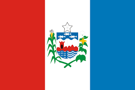

Conhecendo o estado de Alagoas!
Introdução sobre Alagoas
Alagoas é um estado brasileiro que compõe a região Nordeste, com capital no município de Maceió.
Seu relevo é formado por depressões e por planaltos, e os climas encontrados no estado são o semiárido e o tropical. A atual população alagoana é de pouco mais de 3,1 milhões de habitantes, vivendo a maioria nas cidades. Atualmente, a economia alagoana se destaca pela produção de cana-de-açúcar e pela indústria ligada a esse cultivo.
Três principais atrações para você conhecer:
- Praia de Antunes, Maragogi
- Foz do Rio São Francisco
- Cânions do Xingó